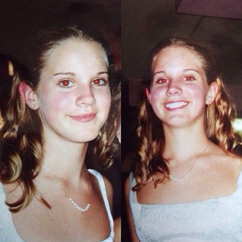
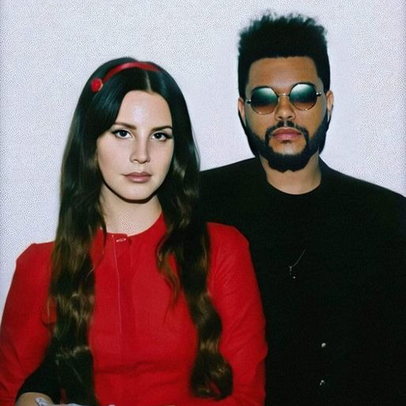
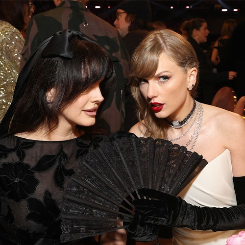

Biografía
Lana Del Rey, cuyo nombre real es Elizabeth Woolridge Grant, nació el 21 de junio de 1985 en Nueva York, Estados Unidos. Sus padres, Rob Grant y Pat Grant, trabajaban en el ámbito empresarial y su infancia transcurrió en Lake Placid, una pequeña localidad en el estado de Nueva York.

¡Para conocer más información de sus inicios e influencias haz click aquí!
Después de la secundaria, Del Rey asistió a la Universidad Fordham en la ciudad de Nueva York, donde estudió filosofía. Sin embargo, abandonó sus estudios universitarios para centrarse en su carrera musical.
A lo largo de su carrera, Lana Del Rey ha forjado amistades con varias celebridades del mundo del entretenimiento, incluyendo a músicos como Lady Gaga y Taylor Swift. Sin embargo, ha mantenido una relación cercana y colaborativa con artistas como A$AP Rocky y The Weeknd.

